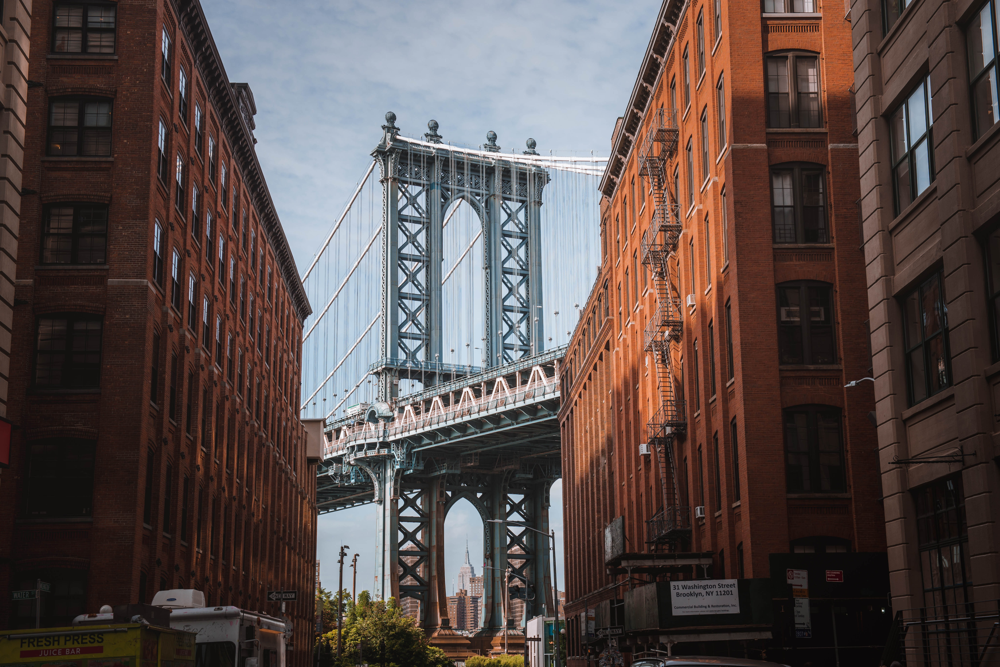
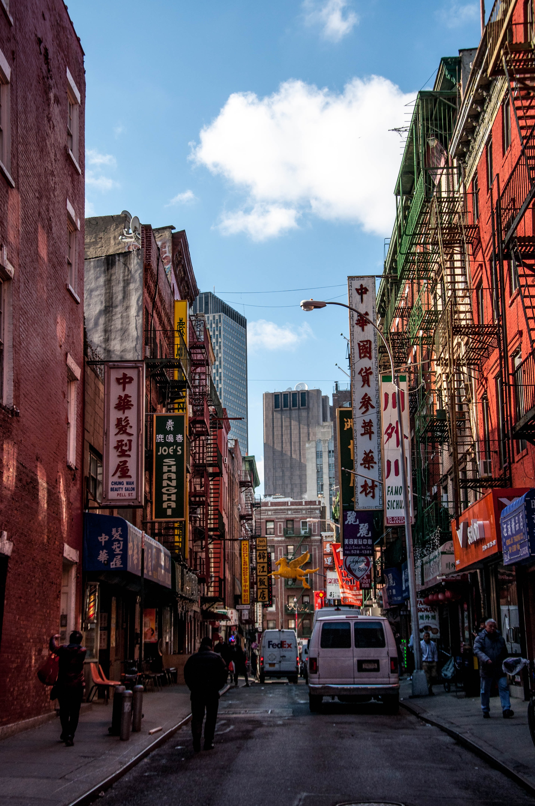
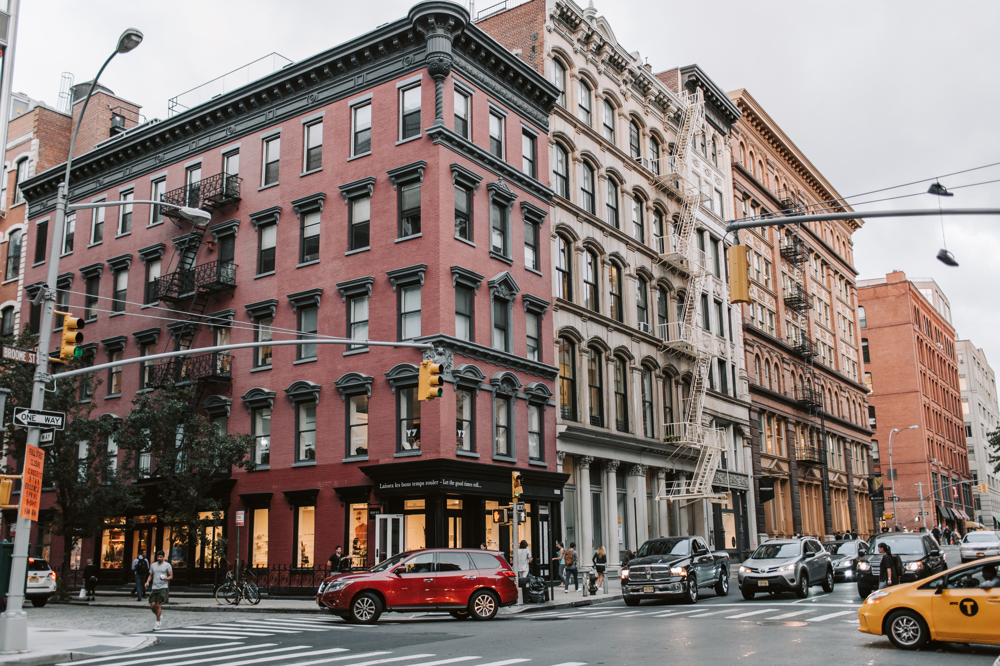

Un periple inoubliable
Pour mes 13 ans, mon père m'a emmenée sur la côte Est américaine. New York est une ville composée de 5 arrondissements à l'embouchure du fleuve Hudson et de l'océan Atlantique. En son centre se trouve Manhattan, un arrondissement densément peuplé faisant partie des principaux centres commerciaux, financiers et culturels du monde. Ses sites incontournables comprennent des gratte-ciel comme l'Empire State Building et l'immense Central Park. Le théâtre de Broadway est situé sur Times Square.
Quelques tips pour l'organisation de votre voyage

Les monuments a visiter
La statue de la Liberté , le monument le plus visité à New York
Posée sur une île gardant l'entrée du port de New York, la statue de la Liberté symbolise à elle seule l'Amérique. Un cadeau offert par la France afin de marquer le centenaire de l'indépendance américaine, en 1876.
Empire State Building, l’emblème de New York
Même s'il est désormais dépassé en taille par la nouvelle génération de buildings, l'Empire State building reste LE passage obligé de tout visiteur à New York. Rendez-vous au sommet pour une vue imprenable !
One World Trade Center, la plus haute tour de New York
Depuis 2013, la tour One World Trade Center s'impose comme le plus haut building de New York. Une construction audacieuse qui remplace les tours jumelles du World Trade Center, abattues le 11 septembre 2001.
Les differents quartiers de la grande pomme
Brooklyn, l'arrondissment le plus peuplé de New York

Chinatown, le quartier chinois

Soho, un quartier artistique et bohémien
